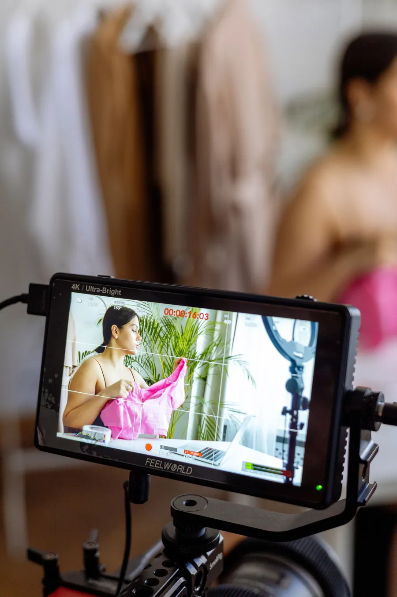

Essencial
Uma presença essencial nas redes sociais.
400 €/ mês
- Filmagens por mês
- 1 × até 2 horas
- Vídeos até 30 segundos
- 2
- Posts
- 4
- Stories
- 4
01 / CONTEÚDO MENSAL · LISBOA
Uma sessão, um plano e conteúdo aprovado para Instagram e Facebook. Você continua a cuidar do negócio.
Vamos falarCriação de conteúdo para redes sociais em Lisboa

Para quem quer publicar com regularidade, mostrar o trabalho e deixar de improvisar ao fim do dia.
I+D / OUTPUT
INSTAGRAM + FACEBOOK
Da presença essencial a filmagens regulares. Escolha o volume de conteúdo de que o seu negócio precisa todos os meses.
Uma presença essencial nas redes sociais.
Mais vídeo e publicações regulares.
Mais filmagens e conteúdo todos os meses.
Bónus: Configuração de anúncios no Facebook e lançamento de um teste para validar uma hipótese.
Escolher pacotePlaneamos o conteúdo, filmamos e preparamos os materiais.
Textos em português. Instagram e Facebook.
Uma ronda de alterações e um relatório mensal breve.
Os vídeos são contados à parte dos posts. Os materiais são criados a partir das filmagens do pacote. Publicar o mesmo material em duas redes não duplica a quantidade.
O primeiro mês é um teste pago.
Deslocações, prazos, pagamento e IVA são acordados por escrito antes de começar.
I+D / PROCESS
Objetivo, público, âmbito e datas. O que vai receber fica escrito.
Ideias e plano primeiro. Depois, filmagem no seu espaço.
Montagem, som, textos e alterações dentro do âmbito acordado.
Os ficheiros nos formatos combinados. No pacote mensal, publicação e relatório.
FAQ
O Premium inclui, como bónus, a configuração de anúncios no Facebook e o teste de uma hipótese. O investimento em anúncios e a gestão contínua são pagos à parte.
A gestão de Direct e o atendimento a clientes não estão incluídos no pacote de produção e publicação.
Não. Os vídeos são contados à parte dos posts. Publicar o mesmo material no Instagram e Facebook não duplica a quantidade.
Criamos vídeos, publicações e Stories que mostram o que faz, como trabalha e como os clientes podem entrar em contacto. Assim, quem descobre o seu negócio percebe mais depressa o que oferece. No pacote mensal, tratamos das publicações e resumimos os resultados num relatório.
Continue a explorar
I+D / NEXT FRAME